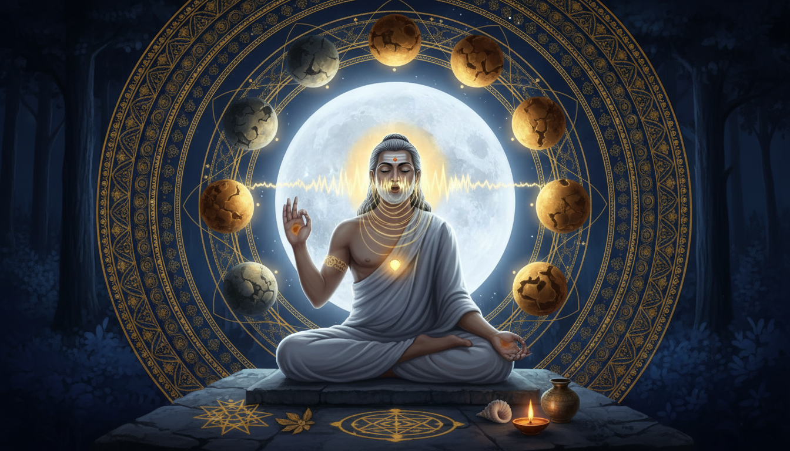

There is a practice that almost every serious remedy practitioner uses and almost nobody can name correctly — and the rishi who was given it was Shandilya, the priest of the Moon, who learned the Udgitha Vidya from his teacher Shaunaka.

They sit. They close the eyes. They move the lips on a mantra, silently, counting on the fingers or on a mala. They hold the count to 108, or to 108,000, and they end. If you asked them what they were doing, most would say japa. If you asked them what the tradition calls the specific form they are performing, most would hesitate.
That hesitation is the subject of this article, and it is not pedantry. The form Shandilya received from his teacher Shaunaka was not silent. It was audible. It was called the Udgitha Vidya, and it is the reason Shandilya is the rishi of the Full Moon — because the practice he was given is a practice of hearing, and the deity he was given it for is the one that is seen but never heard.
Let us be precise about who we are dealing with, because the sources keep warning that people get this wrong.
Part One: The Priest of the Moon
1. The name is not a name. It is a job description.
Wikipedia's Shandilya (Rishi) article opens with the etymology, and it is worth quoting closely because everything else follows from it:
The name derives from the Sanskrit words Śaṇ (roughly, Full), and Dilam (Moon), thus meaning Full Moon, therefore implying Śhāṇḍilya had great devotion towards the Moon God. His descendants have a direct descent from the Chandravamsha and a matrilineal descent from the Suryavamsha.
And the Shandilya gotra article puts the same fact in occupational terms, without any ambiguity:
Śaṇḍilya is a gotra which is named after the great sage Shandilya... The name derives from the Sanskrit words Śaṇ, and Dilam, thus meaning Full Moon, therefore implying Śaṇḍilya to be the priest of the Moon God. People belonging to this gotra are considered to be of lunar race.
Read that twice, because it reframes the entire article. Shandilya was not a rishi who happened to like the Moon. He was the Moon's priest. A family office. A lineage that transmitted a specific ritual authority, generation after generation, for a specific celestial body.
That is why this rishi belongs in a remedial-astrology pipeline and not merely in a philosophy list. The Moon is not a poetic symbol in Jyotiṣa. It is the anchor. Everything in the system is reckoned from it. The Vimśottarī Daśā — the 120-year sequence that astrologers call universally applicable in the Kali Yuga — begins from the position of your natal Moon, and the lord of your birth nakṣatra governs it. Sade Sati, the transit that strikes hardest, is measured as 45 degrees before and after your natal Moon. The nakṣatras themselves, the twenty-seven "mansions," are, in the words of the Nakshatra article, daughters of Daksha and wives of Chandra, and are also described as daughters of Kashyapa — the very Kashyapa who, by the Shandilya (Rishi) article, is Shandilya's own grandfather.
A lineage that is simultaneously a lineage of the Moon and a lineage of Kashyapa, that transmits a ritual of hearing the divine, and that produced a text on the size of the soul — that is a subject for a repair manual.
The working form: Before you design one remedy, name the authority you are actually invoking, in one line, with the reason. Say plainly: the rishi Shandilya, priest of the Moon God, teacher of the Udgitha Vidya, or the Chandravamsha-Shandilya gotra, or the composer of the Shandilya Upanishad. These are not the same handle, and they carry different ritual payload. The gotra is the lineage of transmission. The Upanishad is the technique manual. The priest-of-the-Moon is the office. Most practitioners will accidentally mix the three and then wonder why a rite produced no result. Pick the handle that matches the fix you are making, and write it down. Ninety seconds. It is the highest-leverage habit in this entire article.
2. The lineage: a moon-priest with a solar mother
The Shandilya (Rishi) article gives the family with a precision that is unusual for hagiography:
Śhāṇḍilya is the son of the great sage Devala, the nephew of Surya, through his mother Devadutta and the grandson of Maharishi Kashyapa.
So: father Devala; mother Devadutta; maternal uncle Surya — the Sun; grandfather Kashyapa. A matrilineal descent from the Suryavaṃśa and a direct descent from the Chandravaṃśa. The lineage is lunar by patrilineal right and solar by maternal blood. The Moon was his title; the Sun was his blood.
The article also records a detail that has practical consequences for anyone building a lineage-based remedy:
Shandilya's devotion towards Lord Chandra is widely known by most but what isn't known by many is that Indumati, granddaughter of Shandilya, married Shatayu, the great grandson of Chandradeva. The couple moved towards the state of modern-day Odisha. They never ruled like their counterparts and lived ascetic lives, as did their descendants.
So the family carried an ascetic practice into a new geography, and their descendants eventually merged with Kshatriya lines in Odisha and then further south into Andhra. This is the pattern behind every gotra in India: an anchor of practice, a rule about who may carry it, and a slow drift as the practice travels.
The working form: Do not mix the two descent lines when you name a remedy. The gotra article records three pravara — Sandilya, Asita, and Deval — and states plainly: "Due to having three pravaras in the gotra, it is also called as Treepravara gotra. The Veda of this gotra is Samveda." That is the operative fact: the Samaveda, and specifically the Kauthuma śākhā, followed by Brahmins known as Chhandog (the article: "The Brahmins of this gotra follow Kauthuma Sakha of Samaveda and they are known as Kauthumashakhiya"). The same article records that in Mithila there are 44 mools — branch origins — each with its own Viji Purusha, and that the gotra is "the largest gotra in Maithil Brahmins of Nepal and Bihar."
This is what a lineage rule looks like in practice: a Veda, a śākhā, a priestly family name, a defined set of ritual authorities, and a geography of branches. If your remedy names Shandilya, name which of those four layers you are leaning on.
3. The Udgitha Vidya: the practice of hearing Om, not just speaking it
Here is the payload. From the Shandilya (Rishi) article:
The learning about the meditation and aloud chanting of the syllable Om, which represents the symbol of the ultimate Brahman, he learned from his teacher Shaunaka is known as Udgitha Vidya.
And again, on his guru:
He was also known as "Udara- Śāṇḍilya", and the disciple of Atidhanvān Śaunaka who taught him about the greatness and the limitlessness of Brahman.
Set the two facts beside each other. Shandilya is the priest of the Moon God — the deity of the visible, luminous night — and the practice he was given is Udgitha: from udgītha, the audible chanting. The disambiguation article on the term is terse but exact: "a name of the mystical syllable Om" and "a division of the Samaveda historically chanted in Vedic ritual by the Udgatr priest."
The ritual title carries the answer. The Udgātr is the priest who sings the Udgītha aloud in the sacrificial assembly. Shandilya received an audible practice from a Vedic ritual specialist and became, by name, the servant of the Moon.
And note what the article says the practice actually is: *meditation and aloud chanting, together.* Not one or the other. The two are a matched pair in the source sentence. That pairing is the mechanism, and it is the part that gets lost in modern practice.
Why does the pair matter? Because in remedial work, the two halves fail in opposite directions. A practitioner who only speaks is generating sound outward — an offering to the room, essentially a broadcast, and it dissipates. A practitioner who only silences is generating inward attention, which is real work, but has no overt ritual edge to it: nothing in the external field responds, so there is no way to tell whether anything happened. Udgitha puts the inner and the outer in the same gesture — the mouth is engaged in the same act as the attention. That is a diagnostic instrument as much as a remedy: if you cannot make the sound and hold the attention at once, you cannot tell which one you actually did.
The working form: Make the mantra audible, and make it audible in a fixed register. Concretely: (1) choose one mantra for the remedy work — the element that maps to the graha you are repairing — and do not improvise it; (2) chant it at a volume that a person two steps away could hear and could not mistake for speech, which is roughly where you must feel the vibration in your own sternum and nasal bridge but not strain your throat; (3) fix the count — 108, or 21, or 11 — and never extend it "if it feels good," because the number is the shape of the offering; (4) if you cannot sustain both the sound and the attention for the full count, shorten the count rather than dropping the sound. The count is negotiable. The audibility is not.
4. The Tajjala: a self smaller than a grain of rice, larger than the earth
The second thing Shandilya is credited with is the Shandilya Vidya, and the Shandilya Vidya article frames its significance bluntly:
The concept of the Atman and the supreme Brahman and their unity was first realised by the sage Shandilya. His insight on the concept of the Atman and the supreme Brahman was called as Shandilya Vidya.
Where does it live? The article is precise: "It is mentioned in the Section 14 of the third chapter of the Upanishad. It is also repeated with some textual variations in the text Shatapatha Brahmana (x. 6. 3). It is also taught in the Agnirahasya and the Brihadaranyaka Upanishad." The Shandilya (Rishi) article puts the same teaching at Chandogya Upanishad III.xiv.1, and adds that the text of the Upanishad is "the concluding part of the Shatapatha Brahmana" at X.vi.3.
The teaching is four verses, and the third one is the one that survives in every reformer's memory:
He is my Self within the heart, smaller than a grain of rice, smaller than a grain of barley, smaller than a mustard seed, smaller than a grain of millet; He is my Self within the heart, greater than the earth, greater than the mid-region, greater than heaven, greater than all these worlds.
The Shandilya Vidya article gives the technical name for this: the Atman is called Tajjala (तज्जलान), and the Shandilya (Rishi) article explains the term — "the universe identified with the changeless Brahman, who is not bound by space or time, having three attributes – creator, preserver and destroyer of the universe."
Here is the occult content, and it is not small. A repair practice needs a location. Every serious tradition has one — the coal, the bell, the specific lamp, the deity's particular vessel. Without a fixed address, the effort disperses into general goodwill, and general goodwill does not move a chart.
Shandilya gives you an address that cannot be escaped and cannot be built: the heart, and inside it, a point smaller than a mustard seed. The article notes that this doctrine "does not distinguish between the lower and the higher Brahman," and that the Ātmān is "a positive entity, both great and small, infinite and infinitesimal, surely reachable after death." For a remedy practitioner this is not philosophy for its own sake. It is an anchor point: the one place in the body where the practitioner can reliably, physically, direct attention, and the one place the tradition says is not merely a metaphor.
The working form: Give every repair practice one physical address, and make it the same address every time. For Shandilya-derived work, that address is the heart-point — the Tajjala — located by placing the right thumb on the centre of the sternum and turning the attention inward and down, behind the breastbone, as though behind a door that is not quite closed. The Āṭmā is described as smaller than a mustard seed, so the attention must be fine — not a broad wash of feeling over the chest, which is emotion, not attention. Practical test: the sensation should have a location you could point to with a fingertip, and it should feel still rather than warm. If it spreads, you have stopped looking and started feeling, and the practice has stopped being a repair and become a comfort. Perform the location step before the mantra, never after. The mantra is the offering; the address is the delivery point. Reversing them is why so much remedy work never lands anywhere.
Part Two: The Manual He Left Behind
5. The manual: what the Shandilya Upanishad actually contains
If the Tajjala is the address, the Shandilya Upanishad is the manual. And the manual is unusually specific — which is why it survives as practice and not just as a text to be cited.
The Shandilya Upanishad article gives the basics: "a Sanskrit text and one of the minor Upanishads of Hinduism. It is one of twenty Yoga Upanishads in the four Vedas, and is attached to the Atharvaveda." It is "listed at number 58 in the serial order of the Muktika enumerated by Rama to Hanuman in the modern era anthology of 108 Upanishads," and it is "also known as the Shandilya Yoga Sutras." On its dating the article is careful and gives three scholars' positions: Gavin Flood dates it to roughly 100 BCE–300 CE; Roy Eugene Davis thinks it probably predates Patanjali's Yoga Sutras; Georg Feuerstein thinks it probably postdates them; Thomas McEvilley calls the chronology uncertain but places it around the Dhyanabindu Upanishad and before the Hatha Yoga Pradipika, Kaulajnananirnaya and Shiva Samhita.
The structure is three chapters. The first is the largest and carries the practice. The Shandilya Upanishad article lists the eleven sections of chapter one exactly: Yama, Niyama, Asana, Pranayama (Nadis, Vayus and Kundalini), Pranayama (Purification of Nadis), Pranayama with Pranava, Pranayama (Purification of Susumna and others), Pratyahara, Dharana, Dhyana, Samadhi. The second chapter "expounds the Brahma Vidya." The third "talks about the nature and forms of Brahman: Sakala Brahman, Niskala Brahman and Sakala-Niskala Brahman."
The counts are what make it usable:
The text is primarily focussed on Yoga techniques, and is among the most detailed in the Upanishadic corpus of texts dedicated to Yoga. It describes ten Yamas (ethical don'ts, restraints), ten Niyamas (ethical to do list, observances) and eight Asanas (postures), along with three Pranayamas, five types of Pratyaharas, five kinds of Dharana, two types of Dhyana and one Samadhi.
And the article supplies the actual lists rather than leaving them to tradition. The ten Yamas: Ahimsa, Satya, Asteya, Brahmacharya, Dayā, Ārjava, Kṣamā, Dhṛti, Mitāhāra, Śauca. The eight Asanas: Svastikasana, Gomukhasana, Padmasana, Virasana, Simhasana, Bhadrasana, Muktasana, Mayurasana. The three Pranayamas: Ujjayi, Sitkara, Sitala. The five Pratyaharas, per the article: the ability to withdraw the senses from the external world at will; the ability to view everything as the Atman; the ability to give away the fruits of one's effort; the ability to be unaffected by sensual pleasures; and "the ability to project one's attention to one of eighteen vital parts of one's own body."
The working form: Build the remedy on the text's own ladder, and stop at the rung the chart actually requires. The Shandilya Upanishad article is explicit about the order: "The Yogi who has mastered all the Yamas, the Niyamas and an Asana, states the Upanishad, should proceed to the Pranayama." For a repair practice aimed at a single transit, that means: one yama-niyama posture of conduct (the ten Yamas are the ethics list — Ahimsa through Śauca — and the ten Niyamas are the observances list), one asana from the eight named, then pranayama, then dharana on the Tajjala. Do not attempt samadhi as a remedy technique. The article describes Samadhi as the last stage of Yoga, and the Pranayama article confirms the classical ordering by quoting Patanjali 1.34 — "pranayama is introduced as a method aimed at stabilizing the mind" — which is precisely the function you want when a transit has destabilised the mind.
6. Nadi purification: the actual repair mechanism
Here is where the article becomes genuinely occult, and where it intersects the Pranayama article's Hatha account.
The Shandilya Upanishad article devotes three consecutive sections of chapter one to breath and nadis — "Pranayama: Nadis, Vayus and Kundalini", "Pranayama: Purification of Nadis", "Pranayama with Pranava" — plus a fourth, "Pranayama: Purification of Susumna and others". That is one quarter of the chapter on the pranic body. And it says plainly:
The text is one of the four Upanishads which includes a discussion of Kundalini chakras from Yoga perspective, the other three being Darshana Upanishad, the Yogachudamani Upanishad, and the Yogashikha Upanishad. However, the ideas in the four texts show an acceptance of a diversity of views; for example, this text asserts that Manipura Chakra has 12 petals instead of 10 in the other texts.
Now set that beside the Pranayama article's description of the mechanism in the Hatha model: "Pranayama and mudras unblock the Sushumna nadi; Kuṇḍalinī climbs." And its list of the classical techniques, which includes exactly what the Shandilya Upanishad is doing: Nadi Shodhana (alternate nostril breathing, also called Anuloma Viloma), Ujjayi ("Victorious Breath"), Sitali (breathing through the rolled tongue), Bhastrika ("Bellows Breath"), Kapalabhati ("Skull-shining Breath", a Śaṭkarman practice). The Pranayama article also gives the technical definition of the compound — Monier-Williams: "of the three 'breath-exercises' performed during Saṃdhyā" — and the three stages as pūraka (inhalation), kumbhaka (retention) and rechaka (exhalation).
Read those two articles together and you get the actual repair thesis: a damaged transit is a blocked current, and the work is to unblock it, not to plead with it.
That is a different mental model from most remedy practice, and it is a better one, because it is testable. The Shandilya Upanishad article notes the text's own habit of reminding "the importance of ethical virtues in a Yogi" — and that is not decoration either. It is the diagnostic layer: if the nadi work keeps failing, the article's own sequence says the cause is upstream, in the Yamas and Niyamas, not in the breath technique.
The working form: Repair the current before you address the planet. The order the Shandilya Upanishad article gives is: ethics (Yama/Niyama) → asana → pranayama → pratyahara → dharana → dhyana → samadhi. For a single-graha repair: (1) one Śauca or Ahimsa practice — the Yamas the article defines as "not causing any pain to any living being at any time through the actions of one's mind, speech or body" (Ahimsa) and "the speaking of truth that conduces to the well being of creatures" (Satya) — because a transit repair performed out of resentment or competitiveness is working against itself; (2) one asana from the eight named, held long enough to stop fidgeting, because the asana is where the attention learns to stay; (3) Nadi Shodhana, and count the rounds rather than the minutes; (4) Ujjayi, which the Pranayama article calls the "Victorious Breath", if and only if the repair is for a Saturn-type or wind-type affliction; (5) dharana on the Tajjala. Do not move to the next stage until the previous one holds without strain. The article's "as the Yogi progresses" structure is a sequence of gates, not a menu.
Part Three: Why the Moon Governs the Repair
7. Why the Moon — the astrological case, in the sources' own words
Now the part that connects all of this to remedial astrology, with the sources doing the arguing.
First: the Moon is where the chart begins. The Jyotisha article: "The first Mahā-Daśā is determined by the position of the natal Moon in a given Nakṣatra. The lord of the Nakṣatra governs the Daśā." And the Dasha (astrology) article gives the arithmetic: "The first Mahā-Daśā is determined by the position of the natal Moon in a given Nakṣatra. The lord of the Nakṣatra governs the Daśā. Each Mahā-Daśā is divided into sub-periods called bhuktis, or antar-daśās, which are proportional divisions of the maha-dasa."
Second: the Moon's own share of the 120 years. The Dasha (astrology) article: "Vimshottari Dasha assumes that the maximum duration of life of an individual human being is 120 Solar sidereal years which is the aggregate duration of all nine planetary periods i.e. Ketu 7, Venus 20, Sun 6, Moon 10, Mars 7, Rahu 18, Jupiter 16, Saturn 19 and Mercury 17, in the order of their operation." The Moon's ten years sit fourth in the sequence.
Third: the nakṣatras are the Moon's own. The Nakshatra article gives the etymology as "a special class of heavenly bodies associated with the moon", with náks- meaning "to attain" and -tra meaning "place" — "the place to which the moon attains." And: "In later jyotisha, the term came to denote 27 equal divisions of the ecliptic. In this equal division system, each nakshatra spans 13° 20'." They are "personified as daughters of Daksha and as wives of Chandra, the god of the Moon" and "also described as the daughters of Kashyapa." The article carries the origin legend intact: "When Chandra neglected his other 26 wives in favour of Rohini, his father-in-law cursed him with leprosy and proclaimed that the Moon would wax and wane each month."
Fourth: the Moon's transit is the emotional one. The Sade Sati article: "Of all transits in traditional Indian, Vedic astrology, which is based on the sidereal zodiac as against the tropical zodiac, Saturn transit is a solely emotional / mental transit. In that, it is the only transit that affects the emotions." And it is measured from the Moon: "Sade Sati is said to begin when the Saturn is transiting the asterism 45 degrees prior to the position of the natal moon and ends when Saturn transits the asterism 45 degrees past the position of the natal moon."
Fifth: what the Moon means. The Planets in astrology article: "Chandra or Soma and represents the mind, queenship and mother."
Put these five together and the doctrine assembles itself. Shandilya was the priest of the planet that the system of repair is reckoned from, and that planet governs the mind. A lineage that transmits an audible practice for the deity of the mind, anchored at a point inside the chest, for the rishi whose grandfather is Kashyapa — Kashyapa being, per the Nakshatra article, the father of the nakṣatras themselves — that is not a coincidence. It is a coherent technology.
The working form: Anchor the whole repair at the Moon, and let the Moon's house decide the rest. Three steps. (1) Find the natal Moon's nakṣatra and its lord — that lord governs the first Mahā-Daśā, so it is the planet already running your life, and it is where a repair has leverage. (2) Find the current transit of Saturn relative to that Moon; the Sade Sati article's rule gives you the exact test — if Saturn is within 45 degrees either side of your natal Moon's position, you are inside the window, and the article's own remedies are named: "It is believed that worshipping Lord Hanuman and Lord Ganesha greatly reduces any malefic effects of Sade Sati." (3) Make the Moon-rule fix the last thing you do, after the nadi work, because the Shandilya Upanishad article's order puts the internal purification first, and the Pranayama article's Patanjali quote says the point of the breath work is a stabilized mind. Repair the channel, then address the transit, then work the Moon. That is the Shandilya sequence, and it is the opposite of what most clients are given.
8. The twenty-seven wives: the nakṣatra table as a remedy index
The Nakshatra article carries a full table of the twenty-seven mansions with three columns that matter to a remedy practitioner — the astrological leader, the deity, and the Indian zodiac span — and it is worth reading as what it is: an index. For each mansion, the lord who owns it and the deity who presides over it are different beings. The deity is the remedy; the lord is the planet that has authority over that stretch of sky. Practitioners routinely use only the first column. The table gives you both.
| No. | Nakṣatra | Leader | Deity | Indian zodiac span |
|---|---|---|---|---|
| 1 | Aśvinī | Ketu | Aśvins (the physicians of the gods) | 0°–13°20′ Aries |
| 2 | Bharaṇī | Śukra | Yama | 13°20′–26°40′ Aries |
| 3 | Kṛttikā | Sūrya | Agni | 26°40′ Aries–10° Taurus |
| 4 | Rohiṇī | Chandra | Prajāpati | 10°–23°20′ Taurus |
| 5 | Mṛgaśiras | Maṅgala | Soma | 23°20′ Taurus–6°40′ Gemini |
| 6 | Ārdrā | Rāhu | Rudra | 6°40′–20° Gemini |
| 7 | Punarvasu | Guru | Aditi | 20° Gemini–3°20′ Cancer |
| 8 | Puṣya | Śani | Bṛhaspati | 3°20′–16°40′ Cancer |
| 9 | Āśleṣā | Budha | Nāgas | 16°40′–30° Cancer |
| 10 | Maghā | Ketu | Pītrs — "The Fathers" | 0°–13°20′ Leo |
| 11 | Pūrvaphalgunī | Śukra | Bhaga | 13°20′–26°40′ Leo |
| 12 | Uttaraphalgunī | Sūrya | Aryamaṇ | 26°40′ Leo–10° Virgo |
| 13 | Hasta | Chandra | Savitṛ | 10°–23°20′ Virgo |
| 14 | Citrā | Maṅgala | Tvaṣṭṛ / Viśvakarma | 23°20′ Virgo–6°40′ Libra |
| 15 | Svātī | Rāhu | Vāyu | 6°40′–20° Libra |
| 16 | Viśākhā | Guru | Indra | 20° Libra–3°20′ Scorpio |
| 17 | Anurādhā | Śani | Mitra | 3°20′–16°40′ Scorpio |
| 18 | Jyeṣṭhā | Budha | Indra | 16°40′–30° Scorpio |
| 19 | Mūla | Ketu | Nirṛti | 0°–13°20′ Sagittarius |
| 20 | Pūrvāṣāḍha | Śukra | Apah | 13°20′–26°40′ Sagittarius |
| 21 | Uttarāṣāḍha | Sūrya | Viśvedevas | 26°40′ Sagittarius–10° Capricorn |
| 22 | Śravaṇa | Chandra | Viṣṇu | 10°–23°20′ Capricorn |
| 23 | Dhaniṣṭhā | Maṅgala | Vāsus | 23°20′ Capricorn–6°40′ Aquarius |
| 24 | Śatabhiṣaj | Rāhu | Varuṇa | 6°40′–20° Aquarius |
| 25 | Pūrvabhādrapada | Guru | Ajaikapada | 20° Aquarius–3°20′ Pisces |
| 26 | Uttarabhādrapada | Śani | Ahirbudhnya | 3°20′–16°40′ Pisces |
| 27 | Revatī | Budha | Puṣaṇ | 16°40′–30° Pisces |
Now look at what a Moon-repair practitioner can actually do with this. The nakṣatras ruled by Chandra are exactly three: Rohiṇī (deity Prajāpati), Hasta (deity Savitṛ), and Śravaṇa (deity Viṣṇu). The nakṣatras ruled by Śani are Puṣya (deity Bṛhaspati), Anurādhā (deity Mitra), and Uttarabhādrapada (deity Ahirbudhnya). And the nakṣatras ruled by Ketu — the node that in the Jyotisha article is "the points where the moon crosses the ecliptic plane" and which has "an orbital cycle of 18 years" and is "always retrograde in motion" — are Aśvinī (deity the Aśvins, the physicians of the gods), Maghā (deity Pītrs, the ancestors), and Mūla (deity Nirṛti).
Notice Maghā and Mūla. Maghā's deity is literally Pītrs — "The Fathers", family ancestors; Mūla's deity is Nirṛti, whose name means dissolution or destruction. Aśvinī's deity is the Aśvins, the physicians of the gods. These are the three mansion-deities that deal directly with ancestry, dissolution, and healing — and they all fall under the shadow of the Moon's own node. If your chart has a nodal or ancestral affliction, this table hands you three specific deity addresses rather than a vague instruction to "worship ancestors."
And one more detail from the Nakshatra article that practitioners should not skip: the nakṣatra is "one of the five elements of a Pañcāṅga" — alongside Tithi, Nityayoga, Karana, and Vāra. So the Moon mansion is one coordinate in a five-coordinate daily frame, not a standalone fact.
The working form: Build a mansion-deity table for your own chart and use the deity column, not the leader column, to pick the remedy. Three rows. (1) List the nakṣatra of your natal Moon, of the Moon's current transit, and of the afflicted planet's current position. (2) For each, take the deity from the table above — not the leader. (3) Fix one deity per affliction and give it a fixed form: the deity's own mātrā, its yantra, or a specific oblation, done on the deity's vāra (weekday), which the Pañcāṅga article's Vāra element gives you. Keep the leader column for timing — when the mansion lord is running — and the deity column for address. Most remedial failures are one of those two columns being used for the other's job.
9. What is genuinely occult here — and what is only good advice
The article should not pretend that everything above is equally attested. Let me separate the layers honestly, because a reader with a working practice will feel the difference.
Textually firm, and directly usable:
- Shandilya as the rishi of the Full Moon, priest of the Moon God, Chandravaṃśa descent, son of Devala, grandson of Kashyapa.
- The Udgitha Vidya: meditation and aloud chanting of Om, received from Śaunaka.
- The Shandilya Vidya at Chandogya III.xiv and Shatapatha Brāhmaṇa X.vi.iii: sarvam khalv idam brahma, the Tajjala Atman, the doctrine that will determines what one becomes.
- The Shandilya Upanishad as a Yoga Upanishad of the Atharvaveda: ten Yamas, ten Niyamas, eight Asanas, three Pranayamas, five Pratyaharas, five Dharana, two Dhyana, one Samadhi; three sections on nadi purification and kundalini; the ethics-first ordering.
- The gotra's Veda (Samaveda), śākhā (Kauthuma), priestly name (Chhandog), three pravaras, 44 Mithila mools.
Astrologically firm, from the standard articles:
- The nakṣatra table with leader, deity and span.
- The Vimśottarī allotment of 120 years with the Moon's ten.
- The natal-Moon origin of the first Mahā-Daśā; Sade Sati's 45-degree rule; Hanuman and Ganesha as its named remedies; the Moon as the planet of the mind; Chandra/Soma.
The genuinely occult layer — where the tradition asserts more than it can prove:
- That the audible Om is the remedy's delivery mechanism rather than its accompaniment.
- That the Tajjala is a locatable address, not a metaphor.
- That nadi blockage is the mechanism behind an afflicted transit.
- That a lineage (gotra, pravara, Veda, śākhā) transmits remedial authority and not merely religious identity.
And here is the boundary that must be stated plainly, because the Jyotisha article states it about the whole field:
The scientific consensus is that astrology is a pseudoscience.
The same article also gives the historical defence of the tradition's own framing, which is the honest version of why Jyotiṣa is not merely a horoscope shop: "Jyotiṣa is one of the Vedāṅga, the six auxiliary disciplines used to support Vedic rituals. Early jyotiṣa is concerned with the preparation of a calendar to determine dates for sacrificial rituals, with nothing written regarding planets." The nakṣatras' first attestation is calendrical — the Nakshatra article: "The first astronomical text that lists them is the Vedanga Jyotisha." The Jyotisha article records the Vedic root: jyotish, "which means light, such as that of the sun or the moon or a heavenly body," and the term covering "the study of astronomy, astrology, and the science of timekeeping using the movements of astronomical bodies."
So the tradition's own claim is not that the stars write your fate. It is that the timing of the rite must be correct, that a calendar is a form of worship, and that when you align an act with a window, you are doing something the ritual calendar was built to do. That claim is testable in the only way it can be: by whether the practice works for the person doing it.
The working form: Hold the two claims separately, and never let the second borrow the authority of the first. Write down, on two different lines: (1) What the source says — cite the article and the verse; (2) What I am claiming for the practitioner — mark it as practice, not as scripture. A remedy that rests only on (2) is a promise. A remedy that rests on (1) and reports honestly on (2) is a discipline. Shandilya's own literature is unusually disciplined on this point, because the Shandilya Vidya article is explicit that the whole claim rests on a single condition — "he who has such faith and in whom there is no doubt will certainly attain to that Godhead" — and the Shandilya (Rishi) article repeats it as "a person with this faith and no doubt will certainly attain to that Godhead." Faith is named as the precondition, not smuggled in as proof.
Part Four: The Practice, Assembled
10. The practice, assembled
Everything above resolves into one sequence. This is the article's payload.
The Shandilya repair, for a Moon-ruled or transit-afflicted chart:
- Name the handle. Which Shandilya are you invoking — the gotra, the rishi of the Full Moon, or the Upanishad's author? Write it on the sheet with the remedy. One line.
- Find the Moon's three positions. Natal Moon's nakṣatra (its lord governs your first Mahā-Daśā). Current Moon transit. The afflicted planet's transit position, and whether Saturn is within 45 degrees of your natal Moon — the Sade Sati article's own test, whose named remedies are Hanuman and Ganesha.
- Take the deities, not the lords. From the table: your natal Moon's nakṣatra deity (Prajāpati, Savitṛ, or Viṣṇu), the transit's nakṣatra deity, and for nodal or ancestral problems, Pītrs at Maghā, Nirṛti at Mūla, or the Aśvins at Aśvinī. Fix one deity per problem.
- Open the channel. One Yama and one Niyama practice (the Shandilya Upanishad article's Ahimsa and Satya definitions are the ones to work from). One asana from the eight named. Then Nadi Shodhana with a counted round. Then Ujjayi if the affliction is Saturn-type or vāta-type. Gate by gate — the article's ordering is a ladder, not a menu.
- Fix the address. The Tajjala — smaller than a mustard seed, inside the heart, larger than the earth. Locate it by attention, not by feeling. It must have a point you could touch with a fingertip.
- Sound the offering. The Udgitha form: audible, fixed register, fixed count, one mantra only. Never improvised to match how the day went.
- Keep the record. Write the nakṣatras, the transit degrees, the deity chosen, the count, and what actually happened. Not what you hoped. The article's own rule about the 108-pada count — the Nakshatra article notes "108 is also the number of beads in a japa mala, representing all the elements (ansh) of Vishnu" — is a good reason to fix the count: a form with a fixed number is comparable across months, and a form without one is not.
The working form: Never change the frame while you are testing a remedy. A repair has a frame: a handle, a deity, a count, an address, a day of the week, and a start date. If a form does not work, change one element, wait a full cycle of the planet involved, and change nothing else. The Jyotisha article gives the reason this matters in one line about transits: "A natal chart shows the positions of the grahas at the moment of birth. After that moment, the grahas move around the zodiac, interacting with the natal chart grahas. This period of interaction is called gochara." The interaction takes years. A remedy tested against a moving sky, with two variables changed, teaches you nothing.
11. A last thing about the name
There is a detail in the Shandilya gotra article that is easy to skim and impossible to unsee once you have read it:
People belonging to this gotra are considered to be of lunar race.
Lunar race. Not merely "descendants of a man named after the moon." A race, in the vocabulary of the tradition — a lineage marked as belonging to Chandra, set apart from the solar race, with its own Veda, its own śākhā, its own priestly name, its own branches, its own temples. The article lists them: the Śrī Piplāj Mātā Mandir at Osian in Rajasthan, whose deity Piplāj is the kuldevī of the Shandilya-gotra families there; the Shandilya Dhām Mandir at Teghra near Barauni in Mithila, maintained by the community itself; the Shandilya Ṛishi Samādhi at Chākreshwar Maheśvar Mandir in Chakan near Pune; the Shandilya Ṛishi Mandir at Shālin in the Kullu district of Himachal Pradesh.
Four shrines, four regions, one practice. That is what a living lineage looks like when it is doing its job.
And the reason that matters, for a repair practitioner, is the one the Shandilya (Rishi) article records about his own teaching. Shandilya resolved, the article says, "certain metaphysical doubts of King Parikshit of Hastinapura and King Vajra of Dwaraka" — that is, he was the person a court went to when the question was "what is actually true, and what should I do about it." He was also credited with the Shandilya Bhakti Sutra and, per the same article, his disciples included Kaundinya, Agnivesha, Vatsya Vamakakshayan, Vaishthapureya and Bharadwaj — students who carried the practice into the world and built lineages of their own.
He did not solve the question by giving them a technique. He gave them an address, a sound, and a rule about conduct. The technique was the easy part. The rule about conduct was the part that made it work.